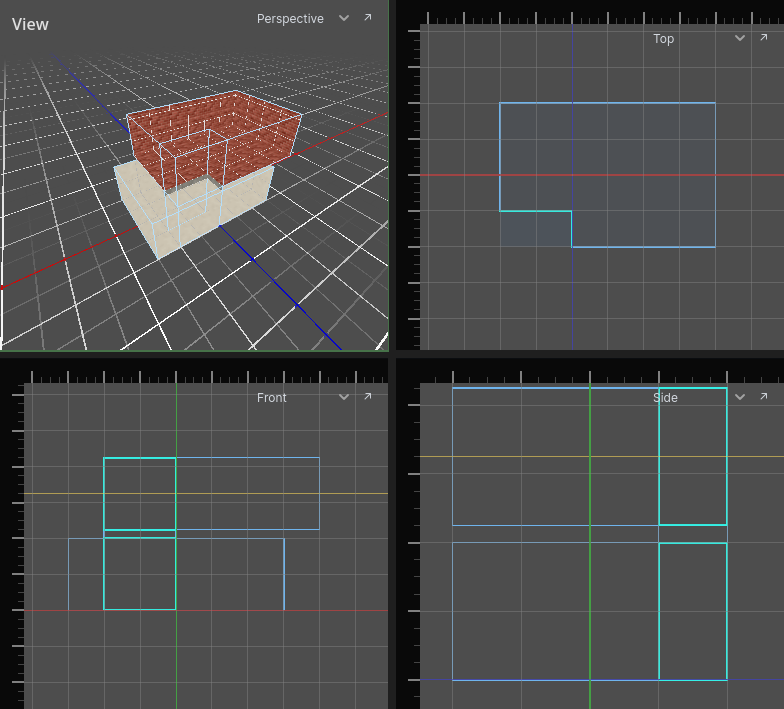

Camera
Each view has its own camera. The view under the mouse takes the input.
3D view
| Do | How |
|---|---|
| Look around | hold the right mouse button and move the mouse |
| Fly | hold the right mouse button, then W A S D |
| Fly faster / slower | add Shift (four times) / Ctrl (a quarter) |
| Orbit | two-finger drag on a trackpad |
| Pan | Shift and two-finger drag |
| Dolly in and out | Ctrl and two-finger drag |
While the right button is held, W A S D fly the camera and do nothing else. Let go and they are editor keys again.
The trackpad orbit turns around the point on the ground (height 0) the camera is looking at.
To see a room from inside, fly into it. From outside, its walls are not drawn on the side facing you.
2D views
| Do | How |
|---|---|
| Pan | drag with the right mouse button, or two-finger drag |
| Zoom at the cursor | mouse wheel, or Ctrl and two-finger drag |
| Cut another view, or move its cut | drag from a ruler with the right mouse button |
| Take a cut away | right-click its line on the ruler |
A 2D view can cut the level at one depth: the top view at a height, the front and side views at a distance. None is cut until you cut it. Rooms the cut passes through are filled in; a room on the viewer's side of the cut - above it, in the top view - is still outlined, faintly, as are the openings and solid brushes there and the detail brushes and entities standing in such a room. What lies wholly beyond the cut is not drawn, and cannot be clicked or caught in a selection box there, so the storey you are on is not buried under the others. Something selected is always drawn. A cut that passes through no room fades nothing. View → Fade What the Cut Misses turns the fading off. The other views' cuts are drawn as guide lines.
A cut is moved from a view that shows it as a line, the way a working plane is: drag from that view's ruler with the right mouse button and the guide line follows the cursor, snapped to the grid. The top view's cut is the horizontal line in the front and side views, so drag from the ruler down their left edge; the ruler along the top moves the front or side view's cut.

Focus on the selection
Press Cmd A to move every view onto what is selected, and each cut there is to the middle of it. Choosing a row in the Problems panel does the same.
Maximise a view
Press M over a view to fill the editor with it. Press M again for all four.